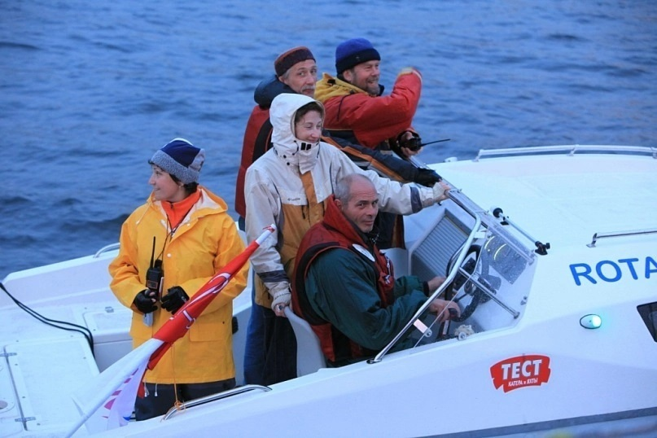
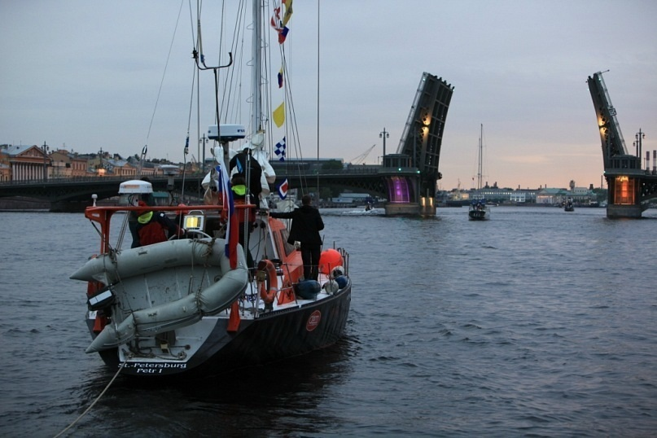

Наши происшествия
Случай №6. Яхта Катти. Ветер, течение, томбуй
Описанный ниже случай – пример классической ошибки. Природа создает условия, как бы ловушку, чтобы судоводитель влетел туда всеми четырьмя лапами.
Яхта Катти участвовала в праздновании дня города Санкт-Петербурга. В программе были: вход в Большую Неву в разводку мостов, парад яхт напротив Петропавловской крепости, катание гостей.

Все шло хорошо, программа праздника завершалась. Яхты-участники стояли на якорях, ожидая разводки мостов. Катти также стояла на становом якоре с использованием томбуя с буйрепом.
Немного объяснений про томбуй. Использование томбуя с буйрепом, закрепленным за основание тренда якоря, – старая традиция и классика, так нас учили. Томбуй указывает местоположение якоря, в отдельных случаях облегчает подъем якоря. Старые яхты часто не были оснащены даже механическим шпилем (не говоря уже об электрическом). В этом случае можно было полагаться в основном на мускульную силу экипажа. А если тянуть за буйреп, то якорь как бы выковыривается из грунта и поднять его бывает гораздо легче, чем если тянуть за цепь или якорный трос. А также буйреп помогает перевернуть приподнятый якорь и вытряхнуть из его лап то, что могло в них застрять (кабель, коряга, камень и т.д.). На современных лодках наличие якорных лебедок значительно облегчает подъем якоря и делает наличие томбуя не таким уж обязательным.
Надо сказать, что буйреп – это свободно висящий конец, всегда есть слабина, поскольку его длина относительно глубины всегда берется с запасом. Вывод – если на него наехать при движении под двигателем, то высок риск намотать на винт.
Итак, что же произошло? Лодки стояли спокойно, пока течение пересиливало ветер. Но вот ветер, в аккурат против течения принажал и началась суета. Из-за разных параметров парусности корпуса и рангоута на одни лодки больше действовало течение, на другие ветер. Яхты стали опасно сближаться. На Катти был заведен двигатель и капитан (сам сидел за штурвалом, пенять не на кого) стал, не выбирая якоря, давать ход, чтобы скомпенсировать снос от усиливавшегося ветра. Но лодку уже сдуло почти в точку, где был отдан якорь и буйреп был намотан на винт. Двигатель заглох.
Организаторы праздника (надо отдать им должное) очень оперативно вызвали водолаза, который в специальном снаряжении погрузился и попытался освободить винт.

Но мешало сильное течение. Была предпринята еще одна героическая попытка членом нашего экипажа в легком снаряжении освободить винт, но и она не увенчалась успехом. Поскольку в скором времени всем яхтам надо было организованно выходить из Невы караваном под специально для этого разведенными мостами, то мы так и остались без хода. Доблестная яхта Петр 1 взяла Катти на буксир и привела на базу в Центральный яхтклуб.

Дальнейший осмотр выявил повреждение резинометаллической муфты в трансмиссии двигателя, которая была заменена.
С тех пор яхта Катти никогда не применяла томбуй с буйрепом при отдаче якоря.